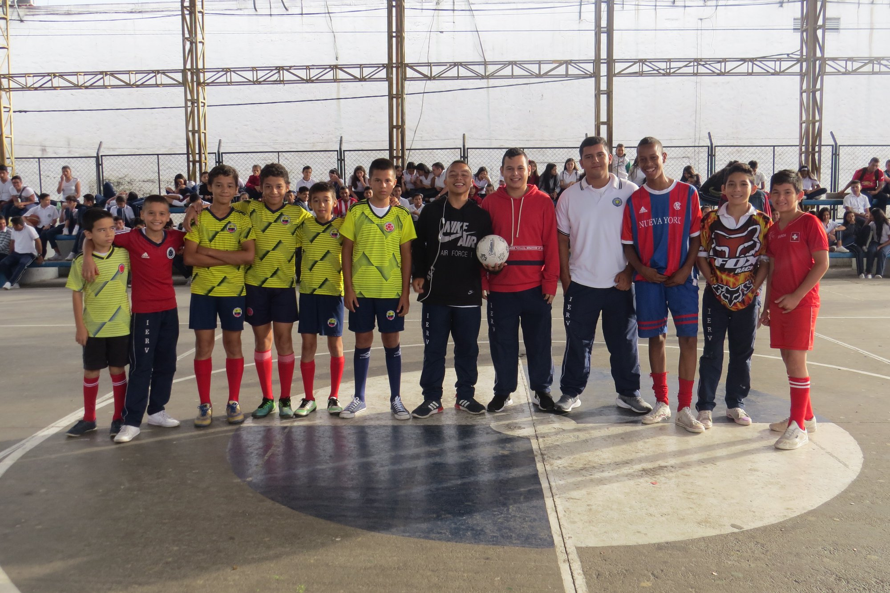

Evento Escolar Anual 2024
El colegio celebró su evento anual con la participación activa de estudiantes, padres y profesores...
El colegio celebró su evento anual con la participación activa de estudiantes, padres y profesores...
El Mercado Escolar continúa siendo una iniciativa exitosa para fortalecer la economía de la comunidad rural...
Este año, el proyecto educativo enfocado en tecnologías sostenibles ha sido el más destacado en la región...